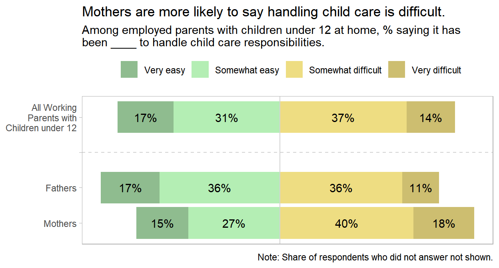
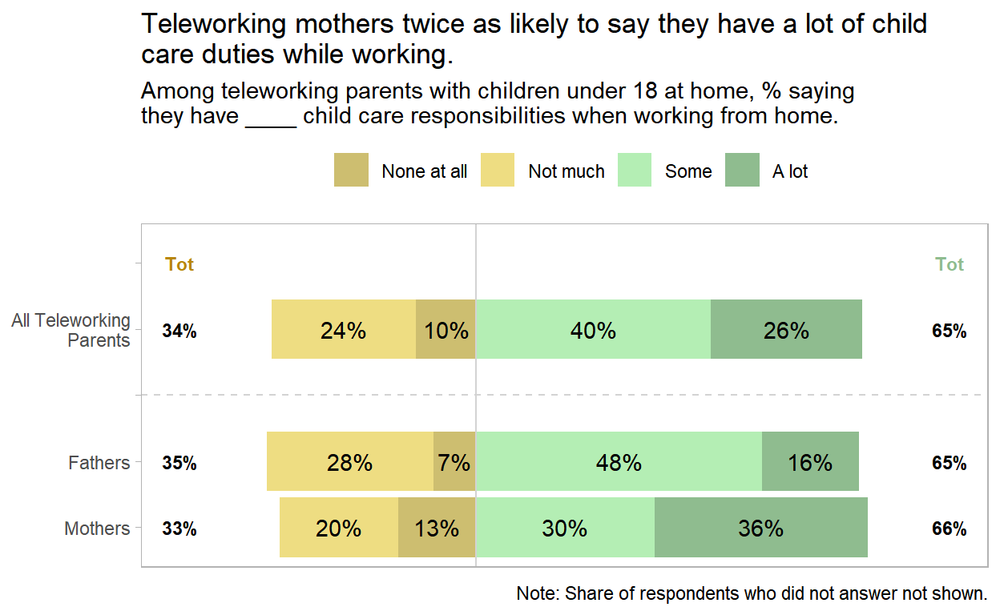
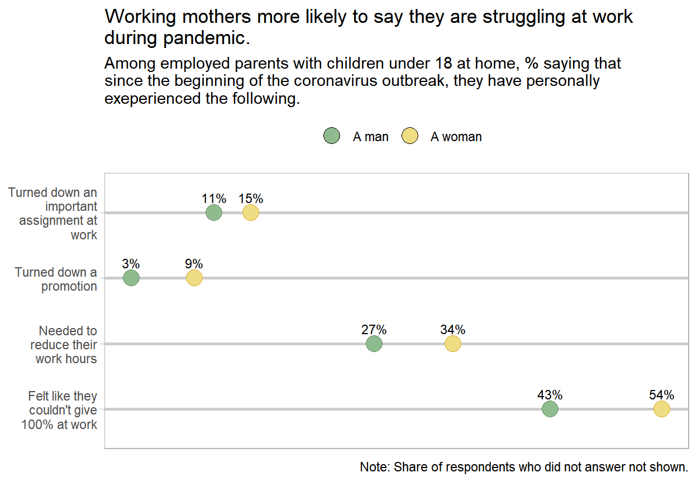

The American Trends Panel Wave 77 data set is available for download at the PEW Research web site. This data was collected from a survey conducted Oct. 13-19, 2020. Everyone who took part is a member of the Pew Research Center’s American Trends Panel (ATP), an online survey panel that is recruited through national, random sampling of residential addresses. The survey is weighted to be representative of the U.S. adult population by gender, race, ethnicity, partisan affiliation, education and other categories (ATP methodology).
dat_0 <- foreign::read.spss(
"../data/ATP W77.sav",
to.data.frame = TRUE
)
svy_0 <- svydesign(ids = ~1, weights = ~ WEIGHT_W77, data = dat_0)The data set consists of 138 variables collected from 10,332 participants. Only a fraction of the columns are of interest for this analysis.
I did not find a codebook associated with the descriptive fields, so I’m going to have to infer a bit. The questions and associated variable names are in the questionanaire.
Most demographic variables are self-explanatory from the variable name or from the response options. A few need explanation.
XKIDS1_W77: PARENTS OF CHILDREN UNDER 18.XPARENT_W77: PARENTS OF CHILDREN UNDER 18 LIVING IN HOUSEHOLD (No could mean they are not parents of children under 18, or they are parents of children under 18 but the children are not living in in the household.)svy_0 %>% gtsummary::tbl_svysummary(
include = c(starts_with("X"), starts_with("F_"), E_COVID_W77,
E_COVIDPARTNER_W77, WFHCURR_W77, WFHPARTNERCURR_W77,
WFHPOSTCVD_W77, CHILD_LT12_W77))| Characteristic | N = 10,3321 |
|---|---|
| XMARITAL_W77 | |
| Has spouse or partner | 6,376 (62%) |
| Does not have spouse or partner | 3,956 (38%) |
| XKIDS1_W77 | |
| Yes | 3,074 (30%) |
| No | 7,219 (70%) |
| Refused | 38 (0.4%) |
| XPARENT_W77 | |
| Yes | 2,817 (27%) |
| No | 7,468 (72%) |
| Refused | 47 (0.5%) |
| F_METRO | |
| Metropolitan | 8,957 (87%) |
| Non-metropolitan | 1,375 (13%) |
| F_CREGION | |
| Northeast | 1,817 (18%) |
| Midwest | 2,142 (21%) |
| South | 3,923 (38%) |
| West | 2,450 (24%) |
| F_CDIVISION | |
| New England | 548 (5.3%) |
| Middle Atlantic | 1,269 (12%) |
| East North Central | 1,442 (14%) |
| West North Central | 700 (6.8%) |
| South Atlantic | 2,061 (20%) |
| East South Central | 605 (5.9%) |
| West South Central | 1,256 (12%) |
| Mountain | 830 (8.0%) |
| Pacific | 1,620 (16%) |
| F_AGECAT | |
| 18-29 | 1,935 (19%) |
| 30-49 | 3,540 (34%) |
| 50-64 | 2,658 (26%) |
| 65+ | 2,146 (21%) |
| Refused | 52 (0.5%) |
| F_GENDER | |
| A man | 4,845 (47%) |
| A woman | 5,362 (52%) |
| In some other way | 93 (0.9%) |
| Refused | 32 (0.3%) |
| F_EDUCCAT | |
| College graduate+ | 3,273 (32%) |
| Some College | 3,220 (31%) |
| H.S. graduate or less | 3,813 (37%) |
| Refused | 25 (0.2%) |
| F_EDUCCAT2 | |
| Less than high school | 933 (9.0%) |
| High school graduate | 2,880 (28%) |
| Some college, no degree | 2,204 (21%) |
| Associate's degree | 1,016 (9.8%) |
| College graduate/some post grad | 1,789 (17%) |
| Postgraduate | 1,484 (14%) |
| Refused | 25 (0.2%) |
| F_HISP | |
| Yes | 1,617 (16%) |
| No | 8,661 (84%) |
| Refused | 55 (0.5%) |
| F_HISP_ORIGIN | |
| Mexican | 858 (53%) |
| Puerto Rican | 147 (9.1%) |
| Cuban | 103 (6.3%) |
| Dominican | 42 (2.6%) |
| Salvadoran | 50 (3.1%) |
| Spanish | 75 (4.6%) |
| Other Central American | 87 (5.4%) |
| Other South American | 134 (8.3%) |
| Other country | 71 (4.4%) |
| Refused | 49 (3.1%) |
| Unknown | 8,715 |
| F_YEARSINUS | |
| Born in US (not including unincorporated territories) | 8,494 (82%) |
| 0-10 years | 393 (3.8%) |
| 11-20 years | 475 (4.6%) |
| 21+ years | 914 (8.8%) |
| DK/Ref | 56 (0.5%) |
| F_RACECMB | |
| White | 7,418 (72%) |
| Black or African-American | 1,239 (12%) |
| Asian or Asian-American | 550 (5.3%) |
| Mixed Race | 399 (3.9%) |
| Or some other race | 499 (4.8%) |
| Refused | 228 (2.2%) |
| F_RACETHNMOD | |
| White non-Hispanic | 6,554 (63%) |
| Black non-Hispanic | 1,204 (12%) |
| Hispanic | 1,617 (16%) |
| Other | 291 (2.8%) |
| Asian non-Hispanic | 526 (5.1%) |
| Refused | 140 (1.4%) |
| F_CITIZEN | |
| Yes | 9,523 (92%) |
| No | 753 (7.3%) |
| Refused | 57 (0.5%) |
| F_BIRTHPLACE2 | |
| U.S. | 8,494 (82%) |
| Puerto Rico | 89 (0.9%) |
| Other U.S. territory | 78 (0.8%) |
| Cuba | 61 (0.6%) |
| Mexico | 368 (3.6%) |
| Another country | 1,212 (12%) |
| Refused | 30 (0.3%) |
| F_MARITAL | |
| Married | 5,333 (52%) |
| Living with a partner | 1,043 (10%) |
| Divorced | 960 (9.3%) |
| Separated | 233 (2.3%) |
| Widowed | 496 (4.8%) |
| Never been married | 2,220 (21%) |
| Refused | 47 (0.5%) |
| F_RELIG | |
| Protestant | 4,353 (42%) |
| Roman Catholic | 2,171 (21%) |
| Mormon (Church of Jesus Christ of Latter-day Saints or LDS) | 179 (1.7%) |
| Orthodox (such as Greek, Russian, or some other Orthodox church) | 78 (0.8%) |
| Jewish | 159 (1.5%) |
| Muslim | 77 (0.7%) |
| Buddhist | 72 (0.7%) |
| Hindu | 84 (0.8%) |
| Atheist | 475 (4.6%) |
| Agnostic | 587 (5.7%) |
| Other | 242 (2.3%) |
| Nothing in particular | 1,795 (17%) |
| Refused | 60 (0.6%) |
| F_BORN | |
| Yes, born-again or evangelical Christian | 3,143 (46%) |
| No, not born-again or evangelical Christian | 3,563 (52%) |
| Refused | 148 (2.2%) |
| Unknown | 3,479 |
| F_RELIGCAT1 | |
| Protestant | 4,353 (42%) |
| Catholic | 2,171 (21%) |
| Unaffiliated | 2,857 (28%) |
| Other | 890 (8.6%) |
| Refused | 60 (0.6%) |
| F_ATTEND | |
| More than once a week | 812 (7.9%) |
| Once a week | 1,990 (19%) |
| Once or twice a month | 792 (7.7%) |
| A few times a year | 1,554 (15%) |
| Seldom | 2,519 (24%) |
| Never | 2,618 (25%) |
| Refused | 47 (0.5%) |
| F_PARTY_FINAL | |
| Republican | 2,773 (27%) |
| Democrat | 3,026 (29%) |
| Independent | 2,934 (28%) |
| Something else | 1,444 (14%) |
| Refused | 155 (1.5%) |
| F_PARTYLN_FINAL | |
| The Republican Party | 1,821 (40%) |
| The Democratic Party | 2,205 (49%) |
| Refused | 507 (11%) |
| Unknown | 5,799 |
| F_PARTYSUM_FINAL | |
| Rep/Lean Rep | 4,593 (44%) |
| Dem/Lean Dem | 5,231 (51%) |
| DK/Refused/No lean | 507 (4.9%) |
| F_PARTYSUMIDEO | |
| Conservative Rep/Lean | 2,788 (27%) |
| Moderate/Liberal Rep/Lean | 1,727 (17%) |
| Moderate/Conservative Dem/Lean | 2,789 (27%) |
| Liberal Dem/Lean | 2,367 (23%) |
| Refused either F_IDEO or F_PARTYSUM_FINAL | 661 (6.4%) |
| F_INC_SDT1 | |
| Less than $30,000 | 2,506 (24%) |
| $30,000 to less than $40,000 | 1,193 (12%) |
| $40,000 to less than $50,000 | 866 (8.4%) |
| $50,000 to less than $60,000 | 941 (9.1%) |
| $60,000 to less than $70,000 | 660 (6.4%) |
| $70,000 to less than $80,000 | 645 (6.2%) |
| $80,000 to less than $90,000 | 465 (4.5%) |
| $90,000 to less than $100,000 | 509 (4.9%) |
| $100,000 or more | 2,087 (20%) |
| Refused | 460 (4.4%) |
| F_REG | |
| You are ABSOLUTELY CERTAIN that you are registered to vote at your current address | 7,119 (75%) |
| You are PROBABLY registered, but there is a chance your registration has lapsed | 992 (10%) |
| You are NOT registered to vote at your current address | 1,344 (14%) |
| Refused | 68 (0.7%) |
| Unknown | 809 |
| F_IDEO | |
| Very conservative | 885 (8.6%) |
| Conservative | 2,438 (24%) |
| Moderate | 4,080 (39%) |
| Liberal | 1,864 (18%) |
| Very liberal | 778 (7.5%) |
| Refused | 286 (2.8%) |
| F_INTFREQ | |
| Almost constantly | 4,068 (41%) |
| Several times a day | 4,603 (47%) |
| About once a day | 630 (6.4%) |
| Several times a week | 293 (3.0%) |
| Less often | 242 (2.5%) |
| Refused | 3 (<0.1%) |
| Unknown | 492 |
| F_VOLSUM | |
| Yes | 3,159 (31%) |
| No | 7,126 (69%) |
| Refused | 46 (0.4%) |
| F_INC_TIER2 | |
| Lower income | 3,241 (31%) |
| Middle income | 4,698 (45%) |
| Upper income | 1,934 (19%) |
| Refused | 460 (4.4%) |
| E_COVID_W77 | |
| Employed full-time | 4,494 (43%) |
| Employed part-time | 1,377 (13%) |
| Retired | 2,250 (22%) |
| Not employed | 2,167 (21%) |
| Refused | 44 (0.4%) |
| E_COVIDPARTNER_W77 | |
| Employed full-time | 3,296 (52%) |
| Employed part-time | 697 (11%) |
| Not employed (including retired or in school) | 2,354 (37%) |
| Refused | 29 (0.4%) |
| Unknown | 3,956 |
| WFHCURR_W77 | |
| All of the time | 1,205 (55%) |
| Most of the time | 341 (16%) |
| Some of the time | 257 (12%) |
| Rarely | 162 (7.4%) |
| Never | 207 (9.5%) |
| Refused | 6 (0.3%) |
| Unknown | 8,155 |
| WFHPARTNERCURR_W77 | |
| All of the time | 768 (19%) |
| Most of the time | 267 (6.7%) |
| Some of the time | 394 (9.9%) |
| Rarely | 334 (8.4%) |
| Never | 2,220 (56%) |
| Refused | 11 (0.3%) |
| Unknown | 6,339 |
| WFHPOSTCVD_W77 | |
| All the time | 591 (27%) |
| Most of the time | 588 (27%) |
| Some of the time | 727 (33%) |
| Rarely | 170 (7.8%) |
| Never | 61 (2.8%) |
| Not sure | 39 (1.8%) |
| Refused | 0 (0%) |
| Unknown | 8,155 |
| CHILD_LT12_W77 | |
| Yes | 2,080 (74%) |
| No | 735 (26%) |
| Refused | 1 (<0.1%) |
| Unknown | 7,515 |
|
1
n (%)
|
|
You can read all of the questions and response options in the questionnaire. I am particularly interested in questions related to how spouses share family responsibilities. In each query below, I filter on E_COVID_W77 %in% c("Employed full-time", "Employed part-time").
FAMSURV1At this point in your life, which of the following would be best for you personally?
svy_0 %>%
subset(E_COVID_W77 %in% c("Employed full-time", "Employed part-time")) %>%
tbl_svysummary(by = "F_GENDER", include = "FAMSURV1_W77", percent = "col")| Characteristic | A man, N = 3,0221 | A woman, N = 2,7761 | In some other way, N = 541 | Refused, N = 191 |
|---|---|---|---|---|
| FAMSURV1_W77 | ||||
| Working full-time for pay | 2,438 (81%) | 1,926 (69%) | 31 (57%) | 4 (21%) |
| Working part-time for pay | 520 (17%) | 779 (28%) | 21 (40%) | 14 (75%) |
| Not working for pay at all | 62 (2.1%) | 70 (2.5%) | 2 (2.9%) | 1 (4.0%) |
| Refused | 2 (<0.1%) | 2 (<0.1%) | 0 (0%) | 0 (0%) |
|
1
n (%)
|
||||
FAMSURV32How do you feel about each of the following?
FAMSURV32_a_W77: The way household chores are divided between you and your spouse or partnerFAMSURV32_c_W77: How well you and your spouse or partner communicate with each otherFAMSURV32_d_W77: How well your spouse or partner balances work and their personal lifeFAMSURV32_e_W77: Your spouse or partner’s approach to parenting
svy_0 %>%
subset(E_COVID_W77 %in% c("Employed full-time", "Employed part-time")) %>%
tbl_svysummary(by = "F_GENDER", include = starts_with("FAMSURV32"), percent = "col")| Characteristic | A man, N = 3,0221 | A woman, N = 2,7761 | In some other way, N = 541 | Refused, N = 191 |
|---|---|---|---|---|
| FAMSURV32_a_W77 | ||||
| Very satisfied | 1,092 (54%) | 624 (36%) | 6 (26%) | 1 (24%) |
| Somewhat satisfied | 687 (34%) | 576 (34%) | 5 (21%) | 1 (23%) |
| Somewhat dissatisfied | 165 (8.1%) | 316 (18%) | 13 (53%) | 3 (53%) |
| Very dissatisfied | 86 (4.2%) | 194 (11%) | 0 (0%) | 0 (0%) |
| Refused | 5 (0.2%) | 5 (0.3%) | 0 (0%) | 0 (0%) |
| Unknown | 987 | 1,062 | 30 | 13 |
| FAMSURV32_c_W77 | ||||
| Very satisfied | 939 (46%) | 711 (41%) | 8 (34%) | 1 (24%) |
| Somewhat satisfied | 799 (39%) | 613 (36%) | 14 (60%) | 4 (76%) |
| Somewhat dissatisfied | 206 (10%) | 250 (15%) | 2 (6.5%) | 0 (0%) |
| Very dissatisfied | 86 (4.2%) | 135 (7.9%) | 0 (0%) | 0 (0%) |
| Refused | 4 (0.2%) | 5 (0.3%) | 0 (0%) | 0 (0%) |
| Unknown | 987 | 1,062 | 30 | 13 |
| FAMSURV32_d_W77 | ||||
| Very satisfied | 662 (49%) | 567 (41%) | 7 (31%) | 2 (34%) |
| Somewhat satisfied | 488 (36%) | 559 (40%) | 13 (57%) | 1 (12%) |
| Somewhat dissatisfied | 169 (12%) | 176 (13%) | 2 (8.5%) | 2 (54%) |
| Very dissatisfied | 40 (2.9%) | 84 (6.0%) | 1 (2.9%) | 0 (0%) |
| Refused | 2 (0.1%) | 5 (0.4%) | 0 (0%) | 0 (0%) |
| Unknown | 1,661 | 1,386 | 31 | 14 |
| FAMSURV32_e_W77 | ||||
| Very satisfied | 537 (59%) | 309 (41%) | 0 (0%) | 0 (0%) |
| Somewhat satisfied | 268 (29%) | 297 (39%) | 5 (78%) | 1 (18%) |
| Somewhat dissatisfied | 80 (8.8%) | 122 (16%) | 1 (22%) | 2 (82%) |
| Very dissatisfied | 27 (2.9%) | 27 (3.5%) | 0 (0%) | 0 (0%) |
| Refused | 1 (0.2%) | 0 (<0.1%) | 0 (0%) | 0 (0%) |
| Unknown | 2,109 | 2,021 | 47 | 16 |
|
1
n (%)
|
||||
FAMSURV35Since the beginning of the coronavirus outbreak, have you personally experienced the following because you were balancing work and parenting responsibilities?
FAMSURV35_a_W77: Needed to reduce your work hoursFAMSURV35_b_W77: Felt like you couldn’t give 100% at workFAMSURV35_c_W77: Turned down a promotionFAMSURV35_d_W77: Turned down an important assignment at work
svy_0 %>%
subset(E_COVID_W77 %in% c("Employed full-time", "Employed part-time")) %>%
tbl_svysummary(by = "F_GENDER", include = starts_with("FAMSURV35"), percent = "col")| Characteristic | A man, N = 3,0221 | A woman, N = 2,7761 | In some other way, N = 541 | Refused, N = 191 |
|---|---|---|---|---|
| FAMSURV35_a_W77 | ||||
| Yes, have experienced this | 263 (27%) | 327 (34%) | 7 (59%) | 0 (0%) |
| No, have not experienced this | 728 (73%) | 631 (66%) | 5 (41%) | 3 (100%) |
| Refused | 1 (<0.1%) | 1 (<0.1%) | 0 (0%) | 0 (0%) |
| Unknown | 2,031 | 1,818 | 41 | 16 |
| FAMSURV35_b_W77 | ||||
| Yes, have experienced this | 430 (43%) | 519 (54%) | 12 (95%) | 0 (0%) |
| No, have not experienced this | 561 (57%) | 439 (46%) | 1 (5.4%) | 3 (100%) |
| Refused | 1 (<0.1%) | 1 (0.1%) | 0 (0%) | 0 (0%) |
| Unknown | 2,031 | 1,818 | 41 | 16 |
| FAMSURV35_c_W77 | ||||
| Yes, have experienced this | 32 (3.2%) | 88 (9.2%) | 0 (0%) | 0 (0%) |
| No, have not experienced this | 959 (97%) | 865 (90%) | 12 (100%) | 3 (100%) |
| Refused | 1 (<0.1%) | 5 (0.5%) | 0 (0%) | 0 (0%) |
| Unknown | 2,031 | 1,818 | 41 | 16 |
| FAMSURV35_d_W77 | ||||
| Yes, have experienced this | 111 (11%) | 140 (15%) | 5 (42%) | 0 (0%) |
| No, have not experienced this | 879 (89%) | 818 (85%) | 7 (58%) | 3 (100%) |
| Refused | 2 (0.2%) | 0 (0%) | 0 (0%) | 0 (0%) |
| Unknown | 2,031 | 1,818 | 41 | 16 |
|
1
n (%)
|
||||
FAMSURV36Since the beginning of the coronavirus outbreak, have you personally experienced the following at work because you have children?
FAMSURV36_a_W77: Being passed over for a promotionFAMSURV36_b_W77: Being passed over for an important assignmentFAMSURV36_c_W77: Being treated as if you weren’t committed to your work
svy_0 %>%
subset(E_COVID_W77 %in% c("Employed full-time", "Employed part-time")) %>%
tbl_svysummary(by = "F_GENDER", include = starts_with("FAMSURV36"), percent = "col")| Characteristic | A man, N = 3,0221 | A woman, N = 2,7761 | In some other way, N = 541 | Refused, N = 191 |
|---|---|---|---|---|
| FAMSURV36_a_W77 | ||||
| Yes, have experienced this | 44 (4.4%) | 87 (9.1%) | 0 (0%) | 0 (0%) |
| No, have not experienced this | 946 (95%) | 871 (91%) | 12 (100%) | 3 (100%) |
| Refused | 2 (0.2%) | 1 (<0.1%) | 0 (0%) | 0 (0%) |
| Unknown | 2,031 | 1,818 | 41 | 16 |
| FAMSURV36_b_W77 | ||||
| Yes, have experienced this | 83 (8.3%) | 108 (11%) | 0 (0%) | 0 (0%) |
| No, have not experienced this | 907 (91%) | 850 (89%) | 12 (100%) | 3 (100%) |
| Refused | 2 (0.2%) | 1 (<0.1%) | 0 (0%) | 0 (0%) |
| Unknown | 2,031 | 1,818 | 41 | 16 |
| FAMSURV36_c_W77 | ||||
| Yes, have experienced this | 108 (11%) | 177 (19%) | 5 (44%) | 0 (0%) |
| No, have not experienced this | 873 (88%) | 781 (81%) | 7 (56%) | 3 (100%) |
| Refused | 10 (1.0%) | 1 (<0.1%) | 0 (0%) | 0 (0%) |
| Unknown | 2,031 | 1,818 | 41 | 16 |
|
1
n (%)
|
||||
FAMSURV38For each of the following, who would you say does more?
FAMSURV38_a_W77: Household chores and responsibilitiesFAMSURV38_b_W77: Managing household financesFAMSURV38_c_W77: Managing your child(ren)’s schedule and activitiesFAMSURV38_d_W77: Being an involved parent
svy_0 %>%
subset(E_COVID_W77 %in% c("Employed full-time", "Employed part-time")) %>%
tbl_svysummary(by = "F_GENDER", include = starts_with("FAMSURV38"), percent = "col")| Characteristic | A man, N = 3,0221 | A woman, N = 2,7761 | In some other way, N = 541 | Refused, N = 191 |
|---|---|---|---|---|
| FAMSURV38_a_W77 | ||||
| You do more than your spouse or partner | 396 (19%) | 984 (57%) | 17 (70%) | 4 (76%) |
| Your spouse or partner does more than you | 720 (35%) | 124 (7.2%) | 2 (6.7%) | 1 (9.0%) |
| Both about equally | 915 (45%) | 600 (35%) | 6 (24%) | 1 (15%) |
| Refused | 4 (0.2%) | 6 (0.4%) | 0 (0%) | 0 (0%) |
| Unknown | 987 | 1,062 | 30 | 13 |
| FAMSURV38_b_W77 | ||||
| You do more than your spouse or partner | 1,037 (51%) | 851 (50%) | 13 (56%) | 1 (9.6%) |
| Your spouse or partner does more than you | 455 (22%) | 367 (21%) | 5 (20%) | 4 (76%) |
| Both about equally | 537 (26%) | 491 (29%) | 6 (24%) | 1 (15%) |
| Refused | 6 (0.3%) | 4 (0.2%) | 0 (0%) | 0 (0%) |
| Unknown | 987 | 1,062 | 30 | 13 |
| FAMSURV38_c_W77 | ||||
| You do more than your spouse or partner | 76 (8.4%) | 518 (69%) | 5 (78%) | 2 (82%) |
| Your spouse or partner does more than you | 508 (56%) | 35 (4.7%) | 0 (7.3%) | 1 (18%) |
| Both about equally | 327 (36%) | 201 (27%) | 1 (14%) | 0 (0%) |
| Refused | 1 (0.1%) | 0 (<0.1%) | 0 (0%) | 0 (0%) |
| Unknown | 2,109 | 2,021 | 47 | 16 |
| FAMSURV38_d_W77 | ||||
| You do more than your spouse or partner | 66 (7.2%) | 369 (49%) | 1 (15%) | 0 (0%) |
| Your spouse or partner does more than you | 275 (30%) | 27 (3.6%) | 0 (0%) | 0 (0%) |
| Both about equally | 572 (63%) | 357 (47%) | 6 (85%) | 3 (100%) |
| Refused | 1 (0.1%) | 2 (0.2%) | 0 (0%) | 0 (0%) |
| Unknown | 2,109 | 2,021 | 47 | 16 |
|
1
n (%)
|
||||
TIMEOFFSome companies have given working parents additional time off to deal with disruptions caused by the coronavirus outbreak. Do you think this is…
svy_0 %>%
subset(E_COVID_W77 %in% c("Employed full-time", "Employed part-time")) %>%
tbl_svysummary(by = "F_GENDER", include = "TIMEOFF_W77", percent = "col")| Characteristic | A man, N = 3,0221 | A woman, N = 2,7761 | In some other way, N = 541 | Refused, N = 191 |
|---|---|---|---|---|
| TIMEOFF_W77 | ||||
| Unfair because workers who do not have children end up having to do more work | 515 (17%) | 445 (16%) | 7 (12%) | 12 (63%) |
| Fair because parents are dealing with demands at home that other workers do not have | 2,478 (82%) | 2,288 (82%) | 47 (88%) | 6 (34%) |
| Refused | 30 (1.0%) | 43 (1.6%) | 0 (0%) | 1 (3.0%) |
|
1
n (%)
|
||||
TIMECHILDThinking about the time you spend with your CHILDREN these days, do you think you spend…
svy_0 %>%
subset(E_COVID_W77 %in% c("Employed full-time", "Employed part-time")) %>%
tbl_svysummary(by = "F_GENDER", include = "TIMECHILD_W77", percent = "col")| Characteristic | A man, N = 3,0221 | A woman, N = 2,7761 | In some other way, N = 541 | Refused, N = 191 |
|---|---|---|---|---|
| TIMECHILD_W77 | ||||
| Too MUCH time | 56 (5.0%) | 84 (8.2%) | 2 (11%) | 0 (0%) |
| Too LITTLE time | 529 (47%) | 416 (41%) | 6 (47%) | 0 (0%) |
| The right amount of time | 521 (47%) | 514 (50%) | 6 (41%) | 3 (100%) |
| Refused | 13 (1.1%) | 11 (1.1%) | 0 (0%) | 0 (0%) |
| Unknown | 1,904 | 1,751 | 40 | 16 |
|
1
n (%)
|
||||
TIMESPOUSEThinking about the time you spend with your SPOUSE OR PARTNER these days, do you think you spend…
svy_0 %>%
subset(E_COVID_W77 %in% c("Employed full-time", "Employed part-time")) %>%
tbl_svysummary(by = "F_GENDER", include = "TIMESPOUSE_W77", percent = "col")| Characteristic | A man, N = 3,0221 | A woman, N = 2,7761 | In some other way, N = 541 | Refused, N = 191 |
|---|---|---|---|---|
| TIMESPOUSE_W77 | ||||
| Too MUCH time | 174 (8.6%) | 154 (9.0%) | 2 (6.7%) | 0 (0%) |
| Too LITTLE time | 816 (40%) | 662 (39%) | 17 (70%) | 2 (44%) |
| The right amount of time | 1,038 (51%) | 885 (52%) | 6 (24%) | 3 (56%) |
| Refused | 6 (0.3%) | 13 (0.7%) | 0 (0%) | 0 (0%) |
| Unknown | 987 | 1,062 | 30 | 13 |
|
1
n (%)
|
||||
CHILDHOMEDo you have any child care responsibilities when you’re working from home?
svy_0 %>%
subset(E_COVID_W77 %in% c("Employed full-time", "Employed part-time")) %>%
tbl_svysummary(by = "F_GENDER", include = "CHILDHOME_W77", percent = "col")| Characteristic | A man, N = 3,0221 | A woman, N = 2,7761 | In some other way, N = 541 | Refused, N = 191 |
|---|---|---|---|---|
| CHILDHOME_W77 | ||||
| A lot | 55 (15%) | 112 (34%) | 0 (0%) | 0 (0%) |
| Some | 181 (49%) | 105 (32%) | 0 (43%) | 0 (0%) |
| Not much | 105 (28%) | 67 (20%) | 0 (0%) | 1 (100%) |
| None at all | 27 (7.5%) | 43 (13%) | 1 (57%) | 0 (0%) |
| Refused | 0 (0%) | 2 (0.5%) | 0 (0%) | 0 (0%) |
| Unknown | 2,654 | 2,448 | 52 | 18 |
|
1
n (%)
|
||||
CVDBALANCECompared with before the coronavirus outbreak, is it…
svy_0 %>%
subset(E_COVID_W77 %in% c("Employed full-time", "Employed part-time")) %>%
tbl_svysummary(by = "F_GENDER", include = "CVDBALANCE_W77", percent = "col")| Characteristic | A man, N = 3,0221 | A woman, N = 2,7761 | In some other way, N = 541 | Refused, N = 191 |
|---|---|---|---|---|
| CVDBALANCE_W77 | ||||
| Easier for you to balance work and family responsibilities | 447 (16%) | 353 (14%) | 2 (4.5%) | 0 (0%) |
| Harder for you to balance work and family responsibilities | 693 (24%) | 760 (30%) | 26 (48%) | 3 (40%) |
| About the same | 1,715 (60%) | 1,440 (56%) | 25 (47%) | 5 (60%) |
| Refused | 1 (<0.1%) | 6 (0.2%) | 0 (0%) | 0 (0%) |
| Unknown | 166 | 217 | 0 | 11 |
|
1
n (%)
|
||||
CVCHILDCAREHow easy or difficult has it been for you to handle child care responsibilities during the coronavirus outbreak?
svy_0 %>%
subset(E_COVID_W77 %in% c("Employed full-time", "Employed part-time")) %>%
tbl_svysummary(by = "F_GENDER", include = "CVCHILDCARE_W77", percent = "col")| Characteristic | A man, N = 3,0221 | A woman, N = 2,7761 | In some other way, N = 541 | Refused, N = 191 |
|---|---|---|---|---|
| CVCHILDCARE_W77 | ||||
| Very easy | 133 (17%) | 105 (16%) | 4 (35%) | 0 (0%) |
| Somewhat easy | 276 (36%) | 181 (27%) | 1 (9.6%) | 1 (18%) |
| Somewhat difficult | 279 (36%) | 272 (40%) | 1 (11%) | 0 (0%) |
| Very difficult | 84 (11%) | 119 (18%) | 5 (45%) | 0 (0%) |
| Refused | 0 (0%) | 1 (<0.1%) | 0 (0%) | 2 (82%) |
| Unknown | 2,250 | 2,099 | 43 | 16 |
|
1
n (%)
|
||||
WLBALANCE1How difficult, if at all, would you say it is for you personally to balance the responsibilities of your job with the responsibilities of your family?
svy_0 %>%
subset(E_COVID_W77 %in% c("Employed full-time", "Employed part-time")) %>%
tbl_svysummary(by = "F_GENDER", include = "WLBALANCE1_W77", percent = "col")| Characteristic | A man, N = 3,0221 | A woman, N = 2,7761 | In some other way, N = 541 | Refused, N = 191 |
|---|---|---|---|---|
| WLBALANCE1_W77 | ||||
| Very easy | 129 (12%) | 115 (12%) | 1 (9.4%) | 0 (0%) |
| Somewhat easy | 496 (45%) | 345 (35%) | 2 (12%) | 0 (0%) |
| Somewhat difficult | 423 (39%) | 409 (41%) | 8 (58%) | 3 (100%) |
| Very difficult | 46 (4.2%) | 121 (12%) | 3 (20%) | 0 (0%) |
| Refused | 1 (0.1%) | 9 (0.9%) | 0 (0%) | 0 (0%) |
| Unknown | 1,927 | 1,778 | 40 | 16 |
|
1
n (%)
|
||||
Pew produced several reports from this survey. To make sure I understand the data correctly, this section reproduces some of their important results.
freq_by_gender <- function(dat, freq_var) {
dat %>%
group_by(F_GENDER, !!sym(freq_var)) %>%
summarize(.groups = "drop", wt = sum(WEIGHT_W77), n = n()) %>%
group_by(F_GENDER) %>%
mutate(pct = wt / sum(wt)) %>%
ungroup()
}CVCHILDCAREIn Pew’s Jan 2021 publication, A rising share of working parents in the U.S. say it’s been difficult to handle child care during the pandemic, Pew writes
Overall, about half of employed parents with children younger than 12 in the household (52%) say it has been difficult to handle child care responsibilities during the coronavirus outbreak… Both working mothers and fathers with children younger than 12 are more likely than they were earlier in the pandemic to say it’s been difficult to handle child care responsibilities. But as was the case in March, larger shares of mothers than fathers say this (57% vs. 47%).
dat_working_parent <- dat_0 %>%
filter(
# excludes "retired" and "not employed"
E_COVID_W77 %in% c("Employed full-time", "Employed part-time") &
# excludes "More than one and do not consider any of them my primary job"
JOBNUM_W77 %in% c("One", "More than one, but consider one of them my primary job") &
# parent or guardian of any children under the age of 12 who live in household
CHILD_LT12_W77 == "Yes"
)
# CVCHILDCARE_W77: How easy or difficult has it been for you to handle child
# care responsibilities during the coronavirus outbreak?
fig1_dat <- dat_working_parent %>%
freq_by_gender("CVCHILDCARE_W77") %>%
# refusing to answer excluded from display, but not from calc, so filter
# _after_ calculation.
filter(CVCHILDCARE_W77 != "Refused" & F_GENDER %in% c("A man", "A woman")) %>%
mutate(CVCHILDCARE_W77 = fct_drop(CVCHILDCARE_W77))
fig1_total <- dat_working_parent %>%
mutate(F_GENDER = "(total)") %>%
freq_by_gender("CVCHILDCARE_W77") %>%
filter(CVCHILDCARE_W77 != "Refused") %>%
mutate(CHILDHOME_W77 = fct_drop(CVCHILDCARE_W77))
fig1_na <- fig1_total %>% mutate(F_GENDER = "NA", pct = NA_real_)
palette_fig1 <- c("darkseagreen", "darkseagreen2", "lightgoldenrod", "lightgoldenrod3")
names(palette_fig1) <- levels(fig1_dat$CVCHILDCARE_W77)
bind_rows(fig1_dat, fig1_total, fig1_na) %>%
mutate(F_GENDER = factor(F_GENDER, levels = c("(total)", "NA", "A man", "A woman"),
labels = c("All Working Parents with Children under 12",
" ", "Fathers", "Mothers")),
CVCHILDCARE_W77 = fct_relevel(CVCHILDCARE_W77, "Somewhat difficult", after = 3)) %>%
ggplot(aes(x = if_else(str_detect(CVCHILDCARE_W77, "easy"), -pct, +pct),
y = fct_rev(F_GENDER),
fill = CVCHILDCARE_W77)) +
geom_col() +
geom_text(aes(label = percent(pct, 1)), position = position_stack(vjust = .5)) +
geom_hline(yintercept = " ", linetype = 2, color = "lightgray") +
geom_vline(xintercept = 0, linetype = 1, color = "lightgray") +
scale_fill_manual(values = palette_fig1[1:4]) +
scale_y_discrete(labels = wrap_format(18)) +
theme_light() +
theme(legend.position = "top",
panel.grid = element_blank(),
axis.text.x = element_blank(),
axis.ticks.x = element_blank()) +
labs(x = NULL, y = NULL, fill = NULL,
title = "Mothers are more likely to say handling child care is difficult.",
subtitle = str_wrap("Among employed parents with children under 12 at home, % saying it has been ____ to handle child care responsibilities.", 70),
caption = "Note: Share of respondents who did not answer not shown.")
CHILDHOMENext in Pew’s Jan 2021 publication, Pew writes
Among employed parents who are working remotely all or most of the time and have children younger than 18 at home, about two-thirds (65%) say they have at least some child care responsibilities when working from home, including 26% who say they have a lot.
Mothers and fathers who are working from home all or most of the time are equally likely to say they have at least some child care responsibilities while working from home (66% vs. 65%), though moms are about twice as likely as dads to say they have a lot of these duties (36% vs. 16%).
dat_working_parent_18_wfh <- dat_0 %>%
filter(
# excludes "retired" and "not employed"
E_COVID_W77 %in% c("Employed full-time", "Employed part-time") &
# excludes "More than one and do not consider any of them my primary job"
JOBNUM_W77 %in% c("One", "More than one, but consider one of them my primary job") &
# parent or guardian of any children under the age of 18 who live in household
XPARENT_W77 == "Yes" &
# working from home
WFHCURR_W77 %in% c("All of the time", "Most of the time")
)
# CVCHILDCARE_W77: How easy or difficult has it been for you to handle child
# care responsibilities during the coronavirus outbreak?
fig2_dat <- dat_working_parent_18_wfh %>%
freq_by_gender("CHILDHOME_W77") %>%
# refusing to answer excluded from display, but not from calc, so filter
# _after_ calculation.
filter(CHILDHOME_W77 != "Refused" & F_GENDER %in% c("A man", "A woman")) %>%
mutate(CHILDHOME_W77 = fct_drop(CHILDHOME_W77))
fig2_total <- dat_working_parent_18_wfh %>%
mutate(F_GENDER = "(total)") %>%
freq_by_gender("CHILDHOME_W77") %>%
filter(CHILDHOME_W77 != "Refused") %>%
mutate(CHILDHOME_W77 = fct_drop(CHILDHOME_W77))
fig2_na <- fig2_total %>% mutate(F_GENDER = "NA", pct = NA_real_)
fig2_na2 <- fig2_total %>% mutate(F_GENDER = "NA2", pct = NA_real_)
# fig2_na2$CHILDHOME_W77 <- c("Total", "Not much or None", "Some or a lot", "Total")
# fig2_na2$pct <- c(-.5, -.3, +.3, +.8)
fig2_posneg <- bind_rows(fig2_dat, fig2_total, fig2_na, fig2_na2) %>%
mutate(CHILDHOME_W77 = fct_collapse(CHILDHOME_W77,
`Some or a lot` = c("Some", "A lot"),
`Not much or None` = c("Not much", "None at all"))) %>%
group_by(F_GENDER, CHILDHOME_W77) %>%
summarise(.groups = "drop", across(wt:pct, sum)) %>%
mutate(F_GENDER = factor(F_GENDER, levels = c("NA2", "(total)", "NA", "A man", "A woman"),
labels = c(" ", "All Teleworking Parents",
" ", "Fathers", "Mothers")))
palette_fig2 <- c("darkseagreen", "darkseagreen2", "lightgoldenrod", "lightgoldenrod3")
names(palette_fig2) <- levels(fig2_dat$CHILDHOME_W77)
bind_rows(fig2_dat, fig2_total, fig2_na, fig2_na2) %>%
mutate(F_GENDER = factor(F_GENDER, levels = c("NA2", "(total)", "NA", "A man", "A woman"),
labels = c(" ", "All Teleworking Parents",
" ", "Fathers", "Mothers")),
CHILDHOME_W77 = fct_relevel(CHILDHOME_W77, "Some", after = 3)) %>%
ggplot(aes(x = if_else(CHILDHOME_W77 %in% c("Not much", "None at all"), -pct, +pct),
y = fct_rev(F_GENDER),
fill = CHILDHOME_W77)) +
geom_col() +
geom_text(aes(label = percent(pct, 1)), position = position_stack(vjust = .5)) +
geom_text(data = fig2_posneg, aes(x = if_else(CHILDHOME_W77 == "Not much or None", -.5, +.8),
label = percent(pct, 1)), size = 3, fontface = "bold") +
geom_hline(yintercept = " ", linetype = 2, color = "lightgray") +
geom_vline(xintercept = 0, linetype = 1, color = "lightgray") +
scale_fill_manual(values = palette_fig2[1:4]) +
scale_y_discrete(labels = wrap_format(18)) +
theme_light() +
theme(legend.position = "top",
panel.grid = element_blank(),
axis.text.x = element_blank(),
axis.ticks.x = element_blank()) +
guides(fill = guide_legend(reverse = TRUE)) +
labs(x = NULL, y = NULL, fill = NULL,
title = str_wrap("Teleworking mothers twice as likely to say they have a lot of child care duties while working.", 70),
subtitle = str_wrap("Among teleworking parents with children under 18 at home, % saying they have ____ child care responsibilities when working from home.", 70),
caption = "Note: Share of respondents who did not answer not shown.") +
annotate("text", x = -.5, y = " ", label = "Tot", size = 3, fontface = "bold",
hust = 0, color = "darkgoldenrod") +
annotate("text", x = +.8, y = " ", label = "Tot", size = 3, fontface = "bold",
hust = 0, color = "darkseagreen")
FAMSURV35Pew writes
When asked about some of the specific challenges they may have faced at work since the beginning of the coronavirus outbreak because they were balancing work and parenting responsibilities, roughly half of employed parents (49%) say they felt like they could not give 100% at work since the outbreak began and 30% say they needed to reduce their work hours.
dat_working_parent_18 <- dat_0 %>%
filter(
# excludes "retired" and "not employed"
E_COVID_W77 %in% c("Employed full-time", "Employed part-time") &
# excludes "More than one and do not consider any of them my primary job"
JOBNUM_W77 %in% c("One", "More than one, but consider one of them my primary job") &
# parent or guardian of any children under the age of 18 who live in household
XPARENT_W77 == "Yes"
)
# FAMSURV35_a_W77`: Needed to reduce your work hours
fig4_dat_a <- dat_working_parent_18 %>% freq_by_gender("FAMSURV35_a_W77")
fig4_total_a <- dat_working_parent_18 %>% mutate(F_GENDER = "(total)") %>% freq_by_gender("FAMSURV35_a_W77")
# FAMSURV35_b_W77`: Felt like you couldn’t give 100% at work
fig4_dat_b <- dat_working_parent_18 %>% freq_by_gender("FAMSURV35_b_W77")
fig4_total_b <- dat_working_parent_18 %>% mutate(F_GENDER = "(total)") %>% freq_by_gender("FAMSURV35_b_W77")
# FAMSURV35_c_W77`: Turned down a promotion
fig4_dat_c <- dat_working_parent_18 %>% freq_by_gender("FAMSURV35_c_W77")
fig4_total_c <- dat_working_parent_18 %>% mutate(F_GENDER = "(total)") %>% freq_by_gender("FAMSURV35_c_W77")
# FAMSURV35_d_W77`: Turned down an important assignment at work
fig4_dat_d <- dat_working_parent_18 %>% freq_by_gender("FAMSURV35_d_W77")
fig4_total_d <- dat_working_parent_18 %>% mutate(F_GENDER = "(total)") %>% freq_by_gender("FAMSURV35_d_W77")
fig4_dat <- bind_rows(
fig4_dat_a %>% filter(FAMSURV35_a_W77 == "Yes, have experienced this" & F_GENDER %in% c("A man", "A woman")) %>%
mutate(item = "Needed to reduce their work hours") %>% select(F_GENDER, item, pct),
fig4_dat_b %>% filter(FAMSURV35_b_W77 == "Yes, have experienced this" & F_GENDER %in% c("A man", "A woman")) %>%
mutate(item = "Felt like they couldn’t give 100% at work") %>% select(F_GENDER, item, pct),
fig4_dat_c %>% filter(FAMSURV35_c_W77 == "Yes, have experienced this" & F_GENDER %in% c("A man", "A woman")) %>%
mutate(item = "Turned down a promotion") %>% select(F_GENDER, item, pct),
fig4_dat_d %>% filter(FAMSURV35_d_W77 == "Yes, have experienced this" & F_GENDER %in% c("A man", "A woman")) %>%
mutate(item = "Turned down an important assignment at work") %>% select(F_GENDER, item, pct),
) %>%
mutate(F_GENDER = fct_drop(F_GENDER))
fig4_tot <- bind_rows(
fig4_total_a %>% filter(FAMSURV35_a_W77 == "Yes, have experienced this") %>%
mutate(item = "Needed to reduce their work hours") %>% select(F_GENDER, item, pct),
fig4_total_b %>% filter(FAMSURV35_b_W77 == "Yes, have experienced this") %>%
mutate(item = "Felt like they couldn’t give 100% at work") %>% select(F_GENDER, item, pct),
fig4_total_c %>% filter(FAMSURV35_c_W77 == "Yes, have experienced this") %>%
mutate(item = "Turned down a promotion") %>% select(F_GENDER, item, pct),
fig4_total_d %>% filter(FAMSURV35_d_W77 == "Yes, have experienced this") %>%
mutate(item = "Turned down an important assignment at work") %>% select(F_GENDER, item, pct),
)
palette_fig4_fill <- c("darkseagreen", "lightgoldenrod")
names(palette_fig4_fill) <- levels(fig4_dat$F_GENDER)
palette_fig4_color <- c("darkseagreen4", "goldenrod")
names(palette_fig4_color) <- levels(fig4_dat$F_GENDER)
fig4_dat %>%
ggplot(aes(x = pct, y = item)) +
geom_point(aes(color = F_GENDER, fill = F_GENDER), size = 5, shape = 21) +
geom_text(aes(label = percent(pct, 1)), vjust = -1, size = 3) +
scale_fill_manual(values = palette_fig4_fill) +
scale_color_manual(values = palette_fig4_color) +
scale_y_discrete(labels = wrap_format(15)) +
theme_light() +
theme(legend.position = "top",
panel.grid = element_blank(),
panel.grid.major.y = element_line(color = "gray80", size = 1, linetype = 1),
axis.text.x = element_blank(),
axis.ticks.x = element_blank()) +
guides(color = FALSE) +
labs(x = NULL, y = NULL, fill = NULL, color = NULL,
title = str_wrap("Working mothers more likely to say they are struggling at work during pandemic.", 65),
subtitle = str_wrap("Among employed parents with children under 18 at home, % saying that since the beginning of the coronavirus outbreak, they have personally exeperienced the following.", 75),
caption = "Note: Share of respondents who did not answer not shown.")
Save the refined data set to a file for subsequent steps.
saveRDS(dat_0, "../data/1_data_mgmt.rds")